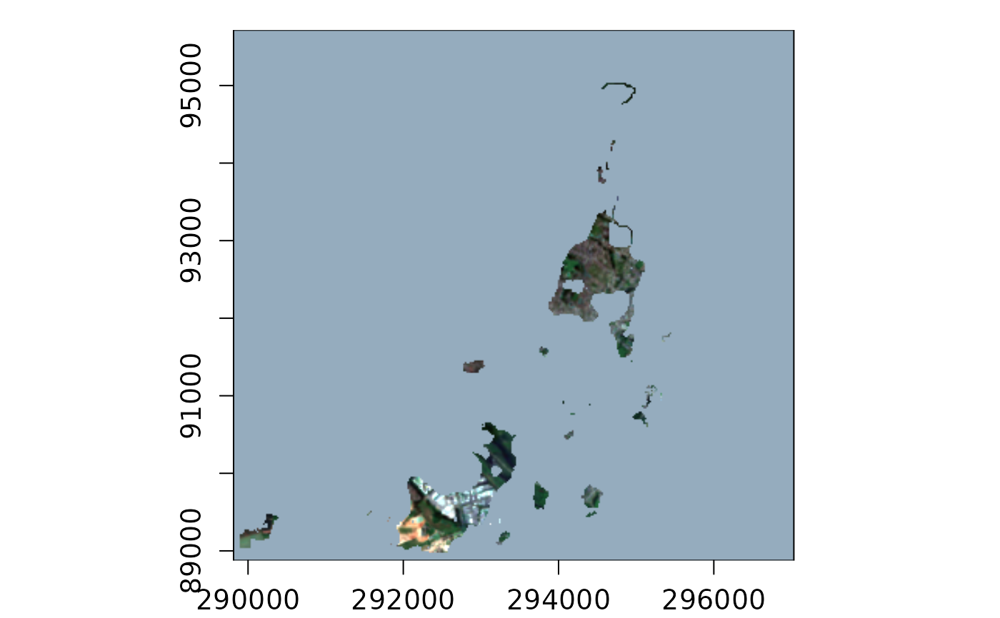
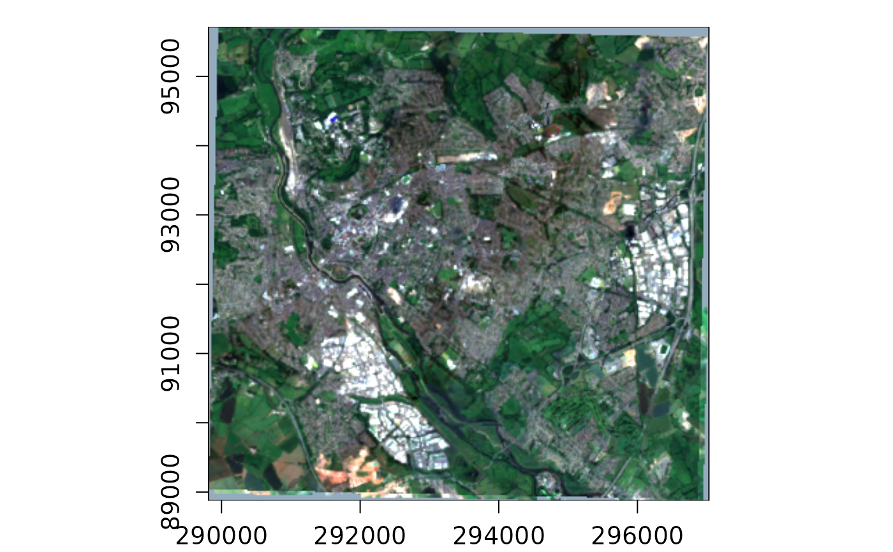

Set built-in GDAL pixel functions of a VRT stack object
Source:R/vrt-set-gdal-pixfun.R
vrt_set_gdal_pixelfun.RdSet built-in GDAL pixel functions of a VRT stack object
Usage
vrt_set_gdal_pixelfun(x, pixfun, ..., band_idx, nodata_as_nan)
# S3 method for class 'vrt_block'
vrt_set_gdal_pixelfun(x, pixfun, ..., band_idx = NULL, nodata_as_nan = FALSE)
# S3 method for class 'vrt_collection'
vrt_set_gdal_pixelfun(x, pixfun, ..., band_idx = NULL, nodata_as_nan = FALSE)Arguments
- x
A vrt_stack object
- pixfun
A built-in GDAL pixel function. See details for a list of available functions.
- ...
named arguments used within the pixel function see details.
- band_idx
The indices of the bands to set the pixel function for. If NULL, the pixel function is set for all bands.
- nodata_as_nan
A logical indicating if the NoData value should be set to NaN. Defaults to FALSE. Sometimes useful if the pixel functions ignore the NoData value. see https://github.com/OSGeo/gdal/issues/4746. If you use this you will probably need to specify the '-srcnodata' option on compute.
Details
The documentation for the GDAL pixel functions can be found at https://gdal.org/en/stable/drivers/raster/vrt.html#built-in-pixel-functions
Where a pixel function requires arguments, these can be passed as named arguments, in line with the specified naming in PixelFunctionArguments of the table at the above link.
Examples
s2files <- fs::dir_ls(system.file("s2-data", package = "vrtility"))
ex_collect <- vrt_collect(s2files)
t_block <- ex_collect[[1]][[1]]
ex_stack <- ex_collect |>
vrt_set_maskfun(
mask_band = "SCL",
mask_values = c(0, 1, 2, 3, 8, 9, 10, 11),
drop_mask_band = TRUE
) |>
vrt_warp(
t_srs = t_block$srs,
te = t_block$bbox,
tr = t_block$res
) |>
vrt_stack()
plot(
vrt_set_gdal_pixelfun(
ex_stack,
pixfun = "min",
propagateNoData = TRUE
),
bands = c(3, 2, 1)
)
#> ℹ You a plotting a warped raster - this might be okay...
#> But, If this is taking a long time you are probably better
#> off saving the file first with `vrt_compute` and then plotting
#> with `plot_raster_src()`.

plot(
vrt_set_gdal_pixelfun(
ex_stack,
pixfun = "min"
),
bands = c(3, 2, 1)
)
#> ℹ You a plotting a warped raster - this might be okay...
#> But, If this is taking a long time you are probably better
#> off saving the file first with `vrt_compute` and then plotting
#> with `plot_raster_src()`.
